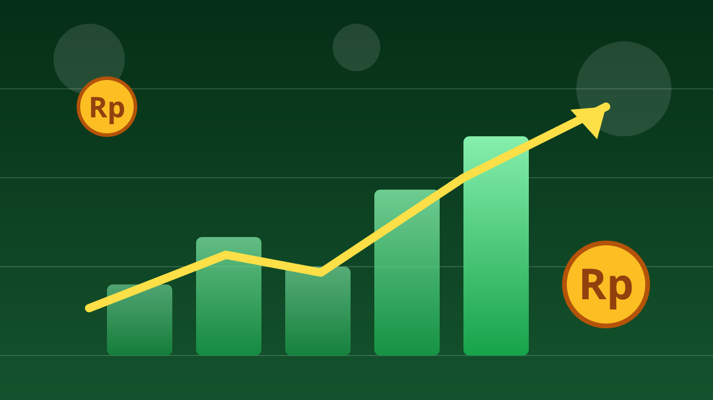

1 / 7

💰 EKONOMI
Satu Data Inflasi AS, Bursa Se-Asia Langsung Merah
Kamis 15 Oktober 2026 jadi hari berdarah buat pasar saham Asia. Geser buat tahu pemicunya →
2 / 7
🇺🇸
Pemicunya: Inflasi AS Lebih Panas
Inflasi AS September 2026 tercatat 3,7% year-on-year, naik dari 3,4% sebulan sebelumnya dan di atas ekspektasi. Pasar langsung menaikkan taruhan bahwa bank sentral AS, The Fed, bakal menaikkan suku bunga lagi.
3 / 7
🇰🇷
Korea Paling Parah: Kospi −7,57%
Indeks Kospi Korea Selatan ditutup anjlok 7,57% ke level 5.554,22. Saking derasnya aksi jual, perdagangan sempat dihentikan 20 menit lewat mekanisme circuit breaker. Raksasa chip Samsung turun 9,5% dan SK Hynix 11,4%.
4 / 7
🇯🇵
Jepang & Tetangga Ikut Terseret
Nikkei 225 Jepang turun sekitar 4,8% ke kisaran 64.489, dengan SoftBank anjlok 9,4%. Taiwan turun 3%, Hang Seng Hong Kong 1%, dan Shanghai 1,4%. Saham teknologi dan AI jadi yang paling babak belur.
5 / 7
🇮🇩
IHSG Juga Kena Imbas
IHSG ikut melemah sekitar 2,2% intraday ke kisaran 5.812–5.814. Saham-saham big cap seperti BYAN, BREN, BBCA, hingga TLKM jadi penekan utama indeks hari itu.
6 / 7
💬
Kata netizen
Di forum saham Naver Korea, investor ritel ramai curhat panik — ada yang mengaku kehilangan separuh tabungannya, ada yang sampai menghapus aplikasi trading-nya karena tak sanggup melihat portofolio terus merah. (Komentar forum saham Naver, dikutip Aju Press.) (Suara netizen — bukan fakta.)
7 / 7
🤔
Efeknya ke lo apa?
Kalau lo nabung di reksa dana, nabung saham, atau sekadar mantau harga HP dan laptop — gejolak kayak gini bisa bikin harga aset naik-turun dan rupiah ikut tertekan. Pelajarannya: jangan panik jual di harga bawah, dan jangan pernah taruh semua uang di satu keranjang. Buat yang baru mau mulai investasi, ini pengingat kenapa dana darurat harus beres dulu sebelum main saham.